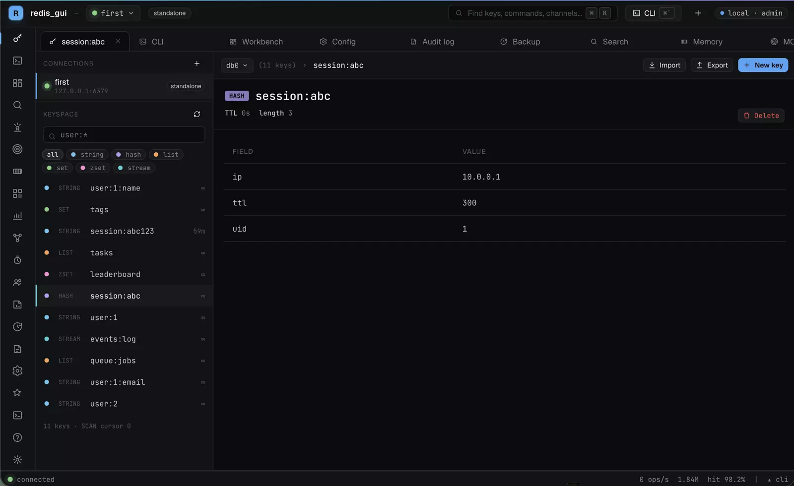

Keyspace
A SCAN browser with glob and type filters and a switcher for each database. Viewers for every type.
- string
- hash
- list
- set
- zset
- stream
- json
- hex
- bitmap
- HyperLogLog
- geo map
Status: beta · MIT · macOS, Linux, Windows
Browse the keyspace, run commands, watch live metrics and manage Redis. One static binary, as a local web app or a native desktop app.
A scripted demo of the kind of session the built-in CLI runs. The numbers are illustrative.

Keyspace browser: glob and type filters, per-database switcher, a viewer for each key type.
What it does
Everything below ships in the same binary. Nothing to install on the Redis side.
A SCAN browser with glob and type filters and a switcher for each database. Viewers for every type.
An interactive CLI as a full tab and a drawer, with meta-commands that drive the GUI. A multi-line runner and saved Lua scripts.
Metric sparklines at 1 Hz, a coalesced MONITOR stream, Pub/Sub, the slow log, a client inventory and a memory analyzer.
A CONFIG editor with guards on destructive directives, cluster topology and slot map, backup triggers and connection management.
Auth modes none, password or token, with viewer, operator and admin roles, an audit log and an AI Copilot (Anthropic or OpenAI).
Tabs, preferences and subscriptions come back from SQLite. Connection passwords are AES-256-GCM encrypted. Light and dark themes. Runs headless or in Docker.
A look inside
Six tabs from the running app. Select a tab, then click the image to enlarge it.
Filter with a glob like user:* or by type, and open any key to see it in a viewer made for its type. The footer shows how many keys the SCAN returned and the cursor.
The CLI lives in a tab and in a drawer you can toggle from anywhere. Type :help for meta-commands that drive the GUI.
Streaming at 1 Hz: ops/s, memory, clients, hit rate and network throughput, plus the server host and version.
Run a sample over a key pattern and see usage by type and by key namespace, then the biggest keys with their TTL.
A live command stream with a substring filter, plus pause and clear.
Write a multi-line pipeline, get a warning when it contains writes, and read each result per line, errors included.
How it works
127.0.0.1 only. The desktop build wraps the same app in a native webview.Gochigo-redis/v9coder/websocketmodernc SQLiteReact 18TypeScriptViteTanStack QueryZustandDownload
Desktop builds for the three platforms, plain server binaries if you prefer the browser, and a Docker image. All of them are on the Releases page.
redis_gui-desktop-windows-amd64.zipUses the Microsoft WebView2 runtime for its window.
redis_gui-<os>-<arch> for six platforms (tar.gz, zip on Windows). Or use the Docker image ghcr.io/abyabyss/redis_gui, see Build from source for the run command.First launch
macOS will say it can't verify redis_gui (free side project, not notarized).
The desktop builds are not code-signed yet, so each OS asks you to confirm once. Here is how to get past it.
Unzip, move redis_gui.app to Applications. Then open System Settings → Privacy & Security and click Open Anyway, or run in Terminal:
xattr -dr com.apple.quarantine /Applications/redis_gui.app
Windows shows a SmartScreen prompt. Choose More info → Run anyway.
The desktop app draws its window with the Microsoft WebView2 runtime.
The desktop app needs the WebKitGTK runtime. The package pulls in libwebkit2gtk-4.0-37 for you.
sudo apt install ./redis_gui-desktop_*.deb
Build from source
Needs Go 1.25+ and Node 20+ at build time only. The runtime is one binary.
git clone https://github.com/AbyAbyss/redis_gui.git cd redis_gui
| Command | Result |
|---|---|
make run | Build, then open the web UI in your browser |
make launch | Launch the existing web build, no rebuild |
make run-desktop | Build and launch the desktop app |
make launch-desktop | Launch the existing desktop build |
make run
make run-desktop
make run binds a random 127.0.0.1 port. For a fixed port:
./redis_gui serve --addr 127.0.0.1:7379
docker run --rm -p 7379:7379 \ -v redis_gui_state:/state \ ghcr.io/abyabyss/redis_gui
| macOS | Xcode command-line tools |
| Linux | libwebkit2gtk-4.0-dev |
| Windows | mingw-w64 and the WebView2 runtime |
xcode-select --install # macOSsudo apt install libwebkit2gtk-4.0-dev # LinuxAn app you build locally opens normally, so the first-launch steps above are only for downloaded builds.